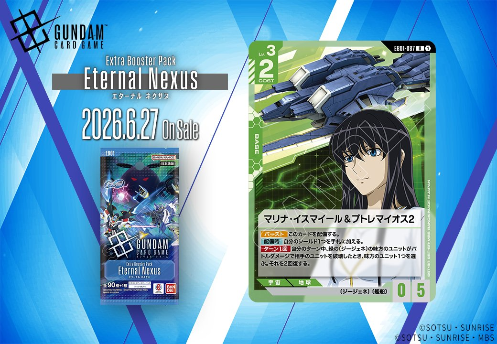
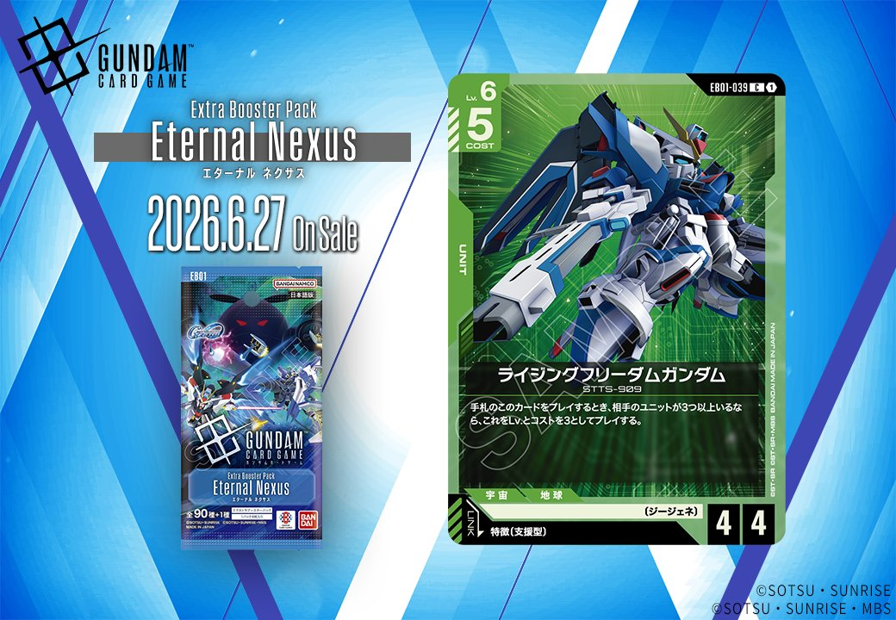
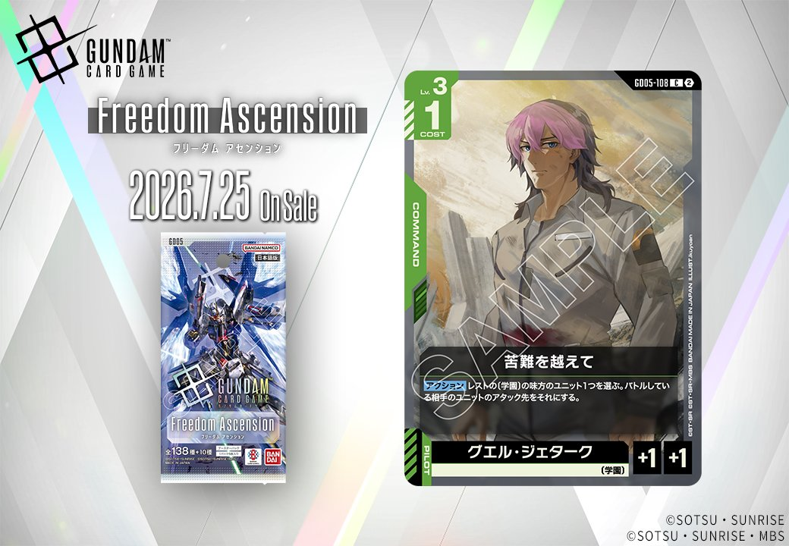
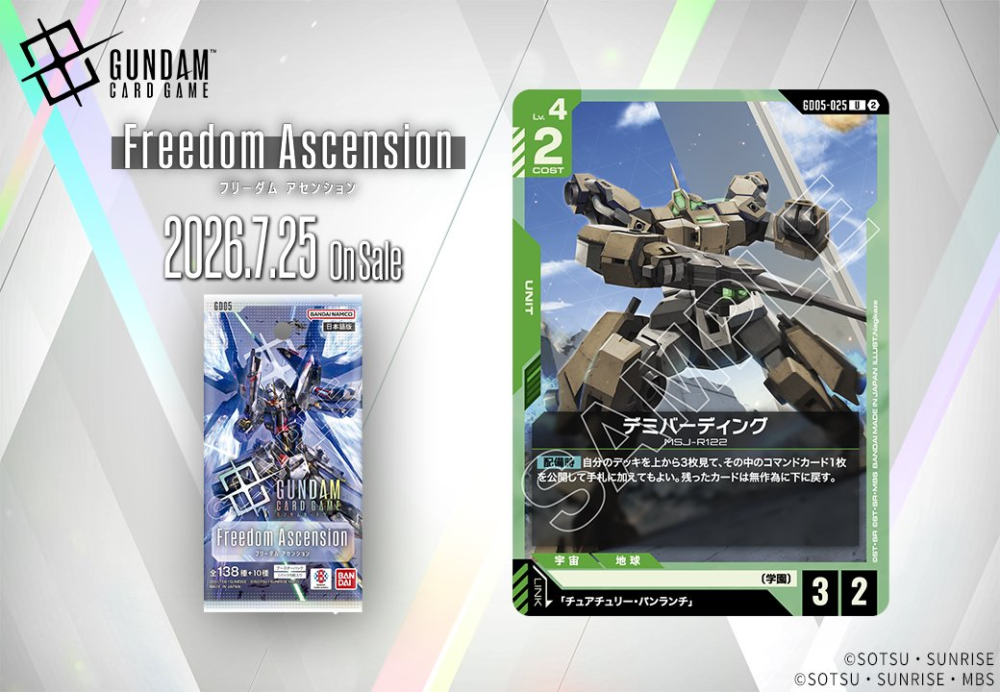
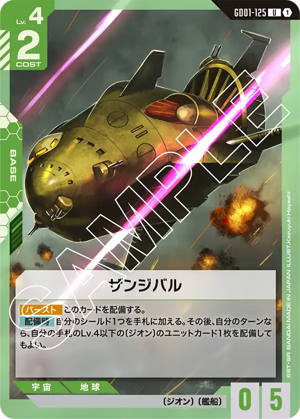

今回は、2026年6月27日発売の「EB01」から2枚、2026年7月25日発売の「Freedom Ascension」と「GD05」から各1枚、計4枚の緑色の新カードを紹介します。BASE、UNIT、COMMANDと多様なカードタイプが揃い、特に2枚のUNITカードはそれぞれ異なるリンク条件を持つ点が特徴的です。

マリナ・イスマイール&プトレマイオス2 (EB01-087)
| 色 | 緑 | タイプ | BASE |
| Lv | 3 | コスト | 2 |
| AP | 0 | HP | 5 |
| 特徴 | 〔ジージェネ〕、〔艦船〕 | ||
効果: 【バースト】このカードを配備する。【配備時】自分のシールド1つを手札に加える。ターン1回 自分のターン中、緑の〔ジージェネ〕の味方のユニットがバトルダメージで相手のユニットを破壊したとき、味方のユニット1つを選ぶ。それを2回復する。
マリナ・イスマイール&プトレマイオス2は、【配備時】のシールド回収と味方ユニットの回復効果を持つ緑のベース。ピースミリオンと同様の配備時シールド回収を持ちながら、〔ジージェネ〕限定ながらLv制限なく味方ユニットを2回復できる点が特徴的。 〔ジージェネ〕デッキでは攻撃的な動きをサポートする優秀なベースとして、2026年6月27日の発売後は緑系デッキの新たな選択肢となりそうだ。

ライジングフリーダムガンダム (EB01-039)
| 色 | 緑 | タイプ | UNIT |
| Lv | 6 | コスト | 5 |
| AP | 4 | HP | 4 |
| 特徴 | 〔ジージェネ〕 | ||
| リンク条件 | 特徴に支援型を持つPILOT | ||
効果: 手札のこのカードをプレイするとき、相手のユニットが3つ以上いるなら、これをLvとコストを3としてプレイする。
ライジングフリーダムガンダムは、相手のユニットが3つ以上いるならLv.3・コスト3として展開できる条件付き軽減効果を持つ〔ジージェネ〕のユニット。本来はLv.6・コスト5・AP4/HP4の重量級だが、相手の展開が進んだ中盤以降なら軽いコストで4/4のボディを出せるため、劣勢からの巻き返しに活躍する。 2026年6月27日発売のEternal Nexusで登場予定で、同セットの「オプションパーツ」でLv.3以下からのバトルダメージを防げるため、軽減プレイ後も一定の場持ちが期待できる。


苦難を越えて (G005-108)
| 色 | 緑 | タイプ | COMMAND |
| Lv | 3 | コスト | 1 |
| パイロット | グエル・ジェターク（補正 AP+1 / HP+1） 〔学園〕 | ||
効果: 【アクション】レストの〔学園〕の味方のユニット1つを選ぶ。バトルしている相手のユニットのアタック先をそれにする。
「苦難を越えて」は、レストの〔学園〕ユニットにアタックを引き受けさせる緑色のコマンドカード。コスト1と軽く、アタックを受けて倒されそうな味方を守りつつ、レスト状態の高耐久ユニットに攻撃を誘導できる防御的カード。 〔学園〕限定という制約があるものの、相手の計算を崩す戦術的な動きが可能で、特に高HPの〔学園〕ユニットと組み合わせれば効果的な盾役として機能するだろう。

デミバーディング (GD05-025)
| 色 | 緑 | タイプ | UNIT |
| Lv | 4 | コスト | 2 |
| AP | 3 | HP | 2 |
| 特徴 | 〔学園〕 | ||
| リンク条件 | 「チュアチュリー・パンランチ」 | ||
効果: 【配備時】自分のデッキを上から3枚見て、その中のコマンドカード1枚を公開して手札に加えてもよい。残ったカードは無作為に下に戻す。
デミバーディング (GD05-025)は、緑のLv.4ユニットでコスト2・AP3/HP2の〔学園〕特徴を持つカードです。【配備時】効果でデッキトップ3枚からコマンドカードを1枚手札に加えられるため、手札の質を高めつつ戦線を構築できる便利なユニットです。「チュアチュリー・パンランチ」とのリンクが可能で、2026年7月25日発売予定の新カードとして、コマンドカードを多用するデッキでの活躍が期待できます。

関連カード
-
 ピースミリオン(GD03-125)緑系デッキ内採用率15% (481デッキ)
ピースミリオン(GD03-125)緑系デッキ内採用率15% (481デッキ) -
ファルメル(ST03-016)緑系デッキ内採用率0.4% (12デッキ)
-

ザンジバル(GD01-125)緑系デッキ内採用率0% (1デッキ) -
 オプションパーツ(EB01-079)NEW緑系 — 同色・共通特徴: ジージェネ（新カード）
オプションパーツ(EB01-079)NEW緑系 — 同色・共通特徴: ジージェネ（新カード） -
 ヅダ（1番機）(EB01-037)NEW緑系 — 同色・共通特徴: ジージェネ（新カード）
ヅダ（1番機）(EB01-037)NEW緑系 — 同色・共通特徴: ジージェネ（新カード） -
マリナ・イスマイール&プトレマイオス2(EB01-087)NEW緑系 — 同色・共通特徴: ジージェネ（新カード）
-
 マーク・ギルダー(ST10-012)白系デッキ内採用率0% (0デッキ)
マーク・ギルダー(ST10-012)白系デッキ内採用率0% (0デッキ) -
 レイジ(EB01-066)緑系デッキ内採用率0% (0デッキ)
レイジ(EB01-066)緑系デッキ内採用率0% (0デッキ) -
 ダリル・ローレンツ(EB01-070)白系デッキ内採用率0% (0デッキ)
ダリル・ローレンツ(EB01-070)白系デッキ内採用率0% (0デッキ) -
 エリス・クロード(EB01-061)青系デッキ内採用率0% (0デッキ)
エリス・クロード(EB01-061)青系デッキ内採用率0% (0デッキ)